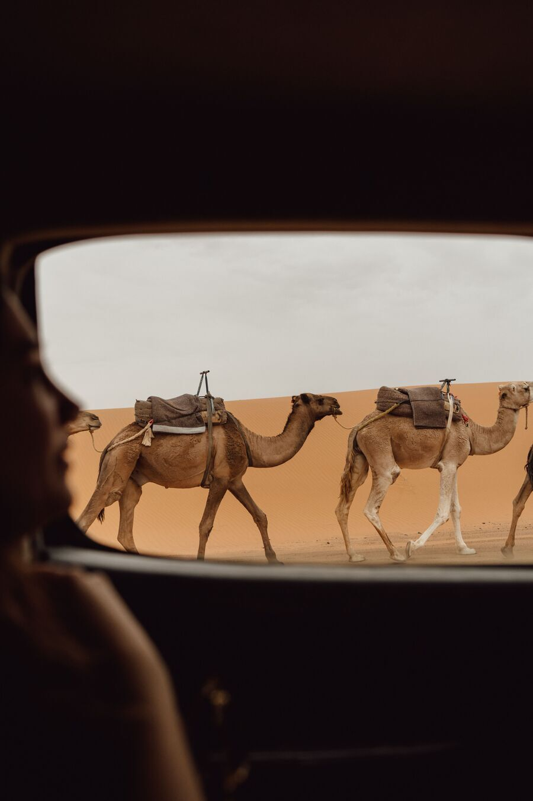

Sahara sotto
le stelle
2–4 giorni
Gite di più giorni a Merzouga: cavalcate in cammello su Erg Chebbi, campi nel deserto e ospitalità berbera sotto un cielo pieno di stelle.
- Cavalcata in cammello al tramonto
- Campo berbero con cena e musica
- Albe sulle dune e notti stellate